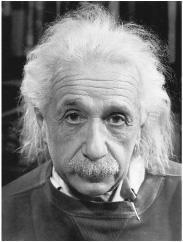

Portrait by Philippe Halsman, 1947
菲利普·哈尔斯曼拍摄的照片，1947年
For a few weeks after the dropping of the atom bomb, Einstein was uncharacteristically reticent. He fended off reporters who were knocking at his door in Saranac Lake, and he even declined to give a quote to his summer neighbor Arthur Hays Sulzberger, publisher of the New York Times, when he called.1
在原子弹投下之后的几个星期里，爱因斯坦异常地沉默寡言。他回绝了那些找上门来的记者，甚至当他的邻居——《纽约时报》的出版人亚瑟·海斯·萨尔兹伯格打来电话时，他也拒不发表任何评论。
It was only as he was about to leave his summer rental in mid-September, more than a month after the bombs had been dropped, that Einstein agreed to discuss the issue with a wire service reporter who came calling. The point he stressed was that the bomb reinforced his longtime support for world federalism. “The only salvation for civilization and the human race lies in the creation of world government,” he said. “As long as sovereign states continue to have armaments and armaments secrets, new world wars will be inevitable.”2
直到9月中旬准备离开租住的避暑别墅时，也就是在投掷原子弹一个多月以后，爱因斯坦才同意跟一位来访的通讯社记者谈论这一事件。他强调，原子弹强化了他长期以来对某种世界联邦制的支持。“文明和人类获救的唯一出路在于创建一个世界政府，”他说，“只要主权国家继续拥有各自的军备和武器秘密，新的世界大战就不可避免。”
As in science, so it was in world politics for Einstein: he sought a unified set of principles that could create order out of anarchy. A system based on sovereign nations with their own military forces, competing ideologies, and conflicting national interests would inevitably produce more wars. So he regarded a world authority as realistic rather than idealistic, as practical rather than naïve.
和科学一样，爱因斯坦也试图从世界政治中找到一套统一的原则，以摆脱无政府状态，重新建立起秩序。如果各个主权国家都有其自身的军事力量、相互竞争的意识形态和彼此冲突的国家利益，那么在这个基础上建立起来的体系将不可避免地导致更多的战争。因此，他认为建立一个世界权力机构不是空想而是现实，不是幼稚而是实际。
He had been circumspect during the war years. He was a refugee in a nation that was using its military might for noble rather than nationalistic goals. But the end of the war changed things. So did the dropping of the atom bombs. The increase in the destructive power of offensive weaponry led to a commensurate increase in the need to find a world structure for security. It was time for him to become politically outspoken again.
在战争年代，爱因斯坦一直比较慎重。作为难民，他所在的国家动用武力是出于崇高的目的，而不是为了国家主义。然而原子弹的投掷和战争的结束改变了一切。随着进攻性武器的破坏力越来越大，建立一个世界组织来保证人类的安全也变得愈发迫切。爱因斯坦在这个时候再次就政治发表看法，可谓恰逢其时。
For the remaining ten years of his life, his passion for advocating a unified governing structure for the globe would rival that for finding a unified field theory that could govern all the forces of nature. Although distinct in most ways, both quests reflected his instincts for transcendent order. In addition, both would display Einstein’s willingness to be a nonconformist, to be serenely secure in challenging prevailing attitudes.
在生命的最后十年里，爱因斯坦不仅积极探索着一种能够支配所有自然力的统一场论，而且热情地提倡在全世界建立一个统一的政府组织。尽管在许多方面迥然不同，但这两种追求都反映了他向往超越秩序的本能，也展现了他甘当反叛者、希望自由挑战流行观点的典型意愿。
The month after the bombs were dropped, a group of scientists signed a statement urging that a council of nations be created to control atomic weaponry. Einstein responded with a letter to J. Robert Oppenheimer, who had so successfully led the scientific efforts at Los Alamos. He was pleased with the sentiments behind the statement, Einstein said, but he criticized the political recommendations as “obviously inadequate” because they retained sovereign nations as the ultimate powers. “It is unthinkable that we can have peace without a real governmental organization to create and enforce law on individuals in their international relations.”
在原子弹投掷之后的那个月，一些科学家签署了一份声明，旨在敦促政府创建一个国家顾问委员会来控制核武器。作为回应，爱因斯坦给曾经成功地领导了洛斯阿拉莫斯科学项目的奥本海默写了一封信。爱因斯坦说，他理解这份声明背后的情感，但认为这种政治谏言“显然不能胜任”，因为它们仍然把主权国家保留下来作为最终的政治力量。“如果没有一个真正凌驾于各国之上的政府组织来指导国际关系，实现和平是不可想象的。”
Oppenheimer politely pointed out that “the statements you attributed to me are not mine.” They had been written by another group of scientists. He did, nevertheless, challenge Einstein’s argument for a full-fledged world government: “The history of this nation up through the Civil War shows how difficult the establishment of a federal authority can be when there are profound differences in the values of the societies it attempts to integrate.”3 Oppenheimer thus became the first of many postwar realists to disparage Einstein for being allegedly too idealistic. Of course, one could flip his argument by noting that the Civil War showed in gruesome terms the danger of not having a secure federal authority instead of state military sovereignty when there are differences of values among member states.
奥本海默客气地指出：“你归之于我的这份声明并非出自我之手。”它是另一群科学家写的。不过，他对爱因斯坦关于一个正式的世界政府的主张提出了挑战。“这个国家自南北战争以来的历史表明，当它试图去整合的社会价值带有深刻差异时，建立一种联邦政府是何等困难。” 于是，奥本海默成为战后第一位批评爱因斯坦过于理想主义的现实主义者。当然，如果人们注意到，南北战争恰恰可怕地表明，当成员国（州）之间存在着价值差异时，只有国家（州）军事主权而没有一个稳固的联邦政府会相当危险，那么奥本海默的论证可以一带而过。
What Einstein envisioned was a world “government” or “authority” that had a monopoly on military power. He called it a “supranational” entity, rather than an “international” one, because it would exist above its member nations rather than as a mediator among sovereign nations.4 The United Nations, which was founded in October 1945, did not come close to meeting these criteria, Einstein felt.
爱因斯坦所设想的是一个可以垄断军事力量的世界“政府”或“权力机构”，他称之为“超国家”组织而非“国际”组织，因为它将凌驾于其成员国之上，而不是充当各个主权国家的调停者。它所扮演的角色将严格限制在军事和国际关系上，而不是一个国家的内政。只有在人权遭到严重侵犯的地方（他当然想到了纳粹德国），这个超国家的政府才有权介入一个国家的内部事务。
Over the next few months, Einstein fleshed out his proposals in a series of essays and interviews. The most important arose from an exchange of fan letters he had with Raymond Gram Swing, a commentator on ABC radio. Einstein invited Swing to visit him in Princeton, and the result was an article by Einstein, as told to Swing, in the November 1945 issue of the Atlantic called “Atomic War or Peace.”5
在接下来的几个月里，爱因斯坦继续在一系列短文和访谈中发出倡议。其中最重要的一篇文章源自他与美国广播公司的晚间新闻评论员雷蒙德·格拉姆·斯温的通信。爱因斯坦邀请斯温来普林斯顿访问，他向斯温口述的内容以“要原子战争还是要和平”为题发表在1945年11月的《大西洋月刊》上。
The three great powers—the United States, Britain, and Russia—should jointly establish the new world government, Einstein said in the article, and then invite other nations to join. Using a somewhat misleading phrase that was part of the popular debate of the time, he said that “the secret of the bomb” should be given to this new organization by Washington.6 The only truly effective way to control atomic arms, he believed, was by ceding the monopoly on military power to a world government.
爱因斯坦在文章中称，世界三大强国——美国、英国和苏联——应当联合建立一个新的世界政府，然后邀请其他国家加入。他用了一个有些让人误解的尚存争议的说法，说“原子弹的秘密”应当由华盛顿移交给这个新的组织。 他认为控制核武器唯一有效的办法就是让一个世界政府来垄断军事力量。
By then, in late 1945, the cold war was under way. America and Britain had begun to clash with Russia for imposing communist regimes in Poland and other eastern European areas occupied by the Red Army. For its part, Russia zealously sought a security perimeter and was neuralgic about any perceived attempt to interfere in its domestic affairs, which made its leaders resist surrendering any sovereignty to a world authority.
1945年年底，冷战已经爆发。由于苏联在红军占领的波兰和其他东欧地区强行建立共产主义政权，美英两国已经开始与苏联发生冲突。苏联正苦于寻找一个安全区域，任何干涉其内政的行为都会令其神经紧张，这使苏联领导人拒绝将任何主权交予一个世界政府。
So Einstein sought to make it clear that the world government he envisioned would not try to impose a Western-style liberal democracy everywhere. He advocated a world legislature that would be elected directly by the people of each member country, in secret ballot, rather than appointed by the nation’s rulers. However, “it should not be necessary to change the internal structure of the three great powers,” he added as a reassurance to Russia. “Membership in a supranational security system should not be based on any arbitrary democratic standards.”
因此，爱因斯坦试图说明，他所设想的世界政府不会把一种西方式的自由民主强加到别处。他倡导建立一个世界立法机构，它将由每一个成员国的人民以无记名投票的方式直接选举产生，而不是由国家的统治者任命。不过，为了打消苏联的疑虑，他又补充说：“没有必要去改变三大强国的内在结构。一个超国家安全体系的成员资格不应建立在任何独断的民主标准之上。”
One issue that Einstein could not resolve neatly was what right this world government would have to intervene in the internal affairs of nations. It must be able “to interfere in countries where a minority is oppressing a majority,” he said, citing Spain as an example. Yet that caused him contortions about whether this standard applied to Russia. “One must bear in mind that the people in Russia have not had a long tradition of political education,” he rationalized. “Changes to improve conditions in Russia had to be effected by a minority because there was no majority capable of doing so.”
爱因斯坦很难解决的一个问题是，这个世界政府在什么时候才有权干涉国家的内部事务。他以西班牙为例说道，“如果一个国家的少数人正在压迫大多数人”，那么世界政府就可以“对这个国家进行干涉”。为了避免苏联误会，他解释说：“我们务必谨记，苏联人民并不具有接受政治教育的悠久传统，苏联状况的改善不得不由少数人来实现，因为大多数人并无此种能力。”
Einstein’s efforts to prevent future wars were motivated not only by his old pacifist instincts but also, he admitted, by his guilty feelings about the role he had played in encouraging the atom bomb project. At a Manhattan dinner given by the Nobel Prize committee in December, he noted that Alfred Nobel, the inventor of dynamite, had created the award “to atone for having invented the most powerful explosives ever known up to his time.” He was in a similar situation. “Today, the physicists who participated in forging the most formidable and dangerous weapon of all times are harassed by an equal feeling of responsibility, not to say guilt,” he said.7
爱因斯坦为防止未来战争所做的努力不仅源于他从前的和平主义本能，而且也为他鼓励实施原子弹计划的愧疚感所促动。在诺贝尔奖委员会12月在曼哈顿举行的一次宴会上，爱因斯坦指出，诺贝尔设立这个奖的目的是“为了弥补曾经发明了当时威力最大的炸药”。他现在的处境也类似。他说：“今天，参与研制有史以来最可怕、最危险的武器的物理学家们正在为同样的责任感所困扰，虽然说不上是犯罪。”
These sentiments prompted Einstein, in May 1946, to take on the most prominent public policy role in his career. He became chairman of the newly formed Emergency Committee of Atomic Scientists, which was dedicated to nuclear arms control and world government. “The unleashed power of the atom has changed everything save our modes of thinking,” Einstein wrote in a fund-raising telegram that month, “and thus we drift towards unparalleled catastrophe.”8
这些看法促使爱因斯坦1946年5月担任了他一生中最为显赫的公共政策角色。他成了新成立的致力于核军控和世界政府的原子能科学家应急委员会（ECAS）主席。在当月的一份筹款电报中，爱因斯坦说：“从原子中释放出来的巨大能量改变了除我们思维方式之外的一切，灾难正在向我们一步步逼近。”
Leó Szilárd served as the executive director and did most of the organizational work. But Einstein, who served until the end of 1948, gave speeches, chaired meetings, and took his role seriously. “Our generation has brought into the world the most revolutionary force since prehistoric man’s discovery of fire,” he said. “This basic power of the universe cannot be fitted into the outmoded concept of narrow nationalisms.”9
西拉德担任这个委员会的执行董事，做了大量组织工作。直到1948年年底，爱因斯坦一直是该委员会的主席，他发表讲演，主持会议，认真履行自己的职责。“自史前人类发现火以来，我们这代人已经把最具革命性的力量带到了这个世界，”爱因斯坦说，“这种宇宙的基本力量并不适合过时的狭隘国家主义概念。”
The Truman administration proposed a variety of plans for the international control of atomic power, but none were able, intentionally or not, to win the support of Moscow. As a result, the battle over the best approach quickly created a political divide.
杜鲁门政府为国际控制原子能提出了各种方案，但没有一项（无论是有意还是无意）能够获得莫斯科的支持。结果，关于最佳方案的斗争迅速造成政治文化和意识形态的一种分裂。
On one side were those who celebrated the success of America and Britain in winning the race to develop such weapons. They saw the bomb as a guarantor of the freedoms of the West, and they wanted to guard what they saw as “the secret.” On the other side were arms control advocates like Einstein. “The secret of the atomic bomb is to America what the Maginot Line was to France before 1939,” he told Newsweek. “It gives us imaginary security, and in this respect it is a great danger.”10
有些人欢呼美国和英国在研制这些武器的竞争中成功地击败了其他国家。他们视原子弹为西方自由的保护神，甘愿守护他们所认为的“秘密”。而像爱因斯坦这样的人则呼吁军控。“原子弹的秘密之于美国就如同1939年以前马其诺防线之于法国，”爱因斯坦对《新闻周刊》说，“它给予我们的是假想的安全，就此而言，它是一个重大的危险。”
Einstein and his friends realized that the battle for public sentiment needed to be fought not only in Washington but also in the realm of popular culture. This led to an amusing—and historically illustrative—tangle in 1946 pitting them against Louis B. Mayer and a coterie of earnest Hollywood moviemakers.
爱因斯坦和朋友们意识到，公共舆论不仅需要占领华盛顿，也需要占领通俗文化领域。这使他们在1946年卷入了一场与路易斯·B.梅耶和一伙热心的好莱坞电影制片商之间的有趣的（并且有历史教益的）混战。
It began when a Metro-Goldwyn-Mayer scriptwriter named Sam Marx asked if he could come to Princeton to get Einstein’s cooperation on a docudrama about the making of the bomb. Einstein sent back word that he had no desire to help. A few weeks later Einstein got an anxious letter from an official with the Association of Manhattan Project Scientists saying that the movie seemed to be taking a very pro-military slant, celebrating the creation of the bomb and the security it gave to America. “I know that you will not want to lend your name to a picture which misrepresents the military and political implications of the bomb,” the letter said. “I hope that you will see fit to make the use of your name conditional on your personal approval of the script.”11
米高梅电影制片公司的编剧萨姆·马克斯问是否可以来普林斯顿，与爱因斯坦合作完成一部有关原子弹研制的文献电视片。爱因斯坦回复说，他无意提供帮助。几周以后，爱因斯坦收到了曼哈顿计划科学家协会的一位官员写来的一封急切的信。信中说，电影似乎天然就有利于军事，能够宣传原子弹的研制成功以及它赋予美国的安全。“我知道您并不想让您的名字出现在一部误解原子弹的军事和政治含义的影片中，”信中说，“但我希望您能够视剧本情况决定是否使用您的名字。”
The following week Szilárd came to see Einstein about the issue, and soon a bevy of peace-loving physicists was bombarding him with concerns. So Einstein read the script and agreed to join the campaign to stop the movie. “The presentation of facts was so utterly misleading that I declined any cooperation or permission of the use of my name,” he said.
一周后，西拉德就此问题拜访了爱因斯坦。不久，一些热爱和平的物理学家开始炮轰爱因斯坦和米高梅电影制片公司。爱因斯坦读了剧本，决定和他们一起抵制这部电影。“它所讲的事实完全是误导人的，我拒绝以我的名义进行合作，绝不允许用我的名字。”他说。
He also sent a spiky letter to the famed mogul that attacked the proposed movie and also, for good measure, the tone of previous ones that Mayer had made. “Although I am not much of a moviegoer, I do know from the tenor of earlier films that have come out of your studio that you will understand my reasons,” he wrote. “I find that the whole film is written too much from the point of view of the Army and the Army leader of the project, whose influence was not always in the direction which one would desire from the point of view of humanity.”12
他还给那位著名的巨头（梅耶）写了一封措辞严厉的信抨击这部电影，使用的也是梅耶曾经用过的那种腔调。“虽然我不常看电影，但是从您的公司早期拍摄的那些电影的一般趋向中，我知道您会理解我的理由，”他写道，“我发现整部电影基本上都是从军方和（曼哈顿）计划的军方领导人的观点写的，而他们的影响并不总是符合人性的观点所期望的方向。”
Mayer turned Einstein’s letter over to the film’s chief editor, who responded with a memo that Mayer sent back to Einstein. President Truman, it said, “was most anxious to have the picture made” and had personally read and approved the script, an argument not likely to reassure Einstein. “As American citizens we are bound to respect the viewpoint of our government.” That, too, was not the best argument to use on Einstein. There followed an even less persuasive argument: “It must be realized that dramatic truth is just as compelling a requirement to us as veritable truth is to a scientist.”
梅耶把爱因斯坦的信转交给了电影的总编，这位总编回了一张便笺，让梅耶寄给爱因斯坦。便笺说，杜鲁门总统“非常希望这部影片能够拍摄出来”，他亲自审阅了剧本并表示赞同。这种说法丝毫不能打消爱因斯坦的疑虑。“作为美国公民，我们一定要尊重政府的观点。”这种论证对爱因斯坦并不十分适用。接下来还有一个说服力更弱的论证：“必须认识到，戏剧性的真理对我们的要求就像真正的真理对科学家的要求一样是强制性的。”
The memo concluded by promising that the moral issues raised by the scientists would be given a proper airing through the character of a fictional young scientist played by an actor named Tom Drake. “We selected among our young male players the one who best typifies earnestness and a spiritual quality,” it said reassuringly. “You need only recall his performance in ‘The Green Years.’ ”13
这张便笺最后承诺，科学家们所提出的道德议题将通过一位虚构的年轻科学家来恰当地公诸于众，扮演这位科学家的人名叫汤姆·德雷克。“我们从众多年轻的男演员中选出了这位最能体现诚挚和精神品质的演员，”他信心十足地说，“您只需回想一下他在《黛绿年华》（The Green Years）中的表演就可以了。”
Not surprisingly, this did not turn Einstein around. When Sam Marx, the scriptwriter, wrote beseeching him to change his mind and allow himself to be portrayed, Einstein replied curtly: “I have explained my point of view in a letter to Mr. Louis Mayer.” Marx was persistent. “When the picture is complete,” he wrote back, “the audience will feel in greatest sympathy with the young scientist.” And from later the same day: “Here is a new and revised script.”14
毫无疑问，这并未使爱因斯坦回心转意。当编剧马克斯写信恳求他改变主意，允许别人饰演他时，爱因斯坦草草地答复道：“我已经在写给路易斯·迈尔先生的信中解释了我的观点。”但马克斯仍然顽固坚持，他在回信中写道：“影片完成后，观众将会对这位年轻科学家致以最深切的同情。”那一天晚些时候他又说：“这是新修订的剧本。”
The ending was not that hard to predict. The new script was more pleasing to the scientists, and they were not immune to the lure of being glorified on the big screen. Szilárd sent Einstein a telegram saying, “Have received new script from MGM and am writing that I have no objection to use of my name in it.” Einstein relented. “Agree with use of my name on basis of the new script,” he scribbled in English on the back of the telegram. The only change he requested was in the scene of Szilárd’s 1939 visit to him on Long Island. The script said that he had not met Roosevelt before then, but he had.15
结局不难预料。科学家们对新剧本更为满意，他们没有经受住在大屏幕上被歌颂的诱惑。西拉德在发给爱因斯坦的电报中说：“我已经收到了米高梅电影制片公司的新剧本，我回信说不反对在其中使用我的名字。”爱因斯坦发了慈悲，他在电报背面写了寥寥几句英语：“同意基于新剧本使用我的名字。”他唯一要求修改的是西拉德1939年来长岛拜访他的那场戏。剧本中说，他此前尚未与罗斯福会面，但事实并非如此。
The Beginning or the End, which was the name of the movie, opened to good reviews in February 1947. “A sober, intelligent account of the development and deployment of the Atom Bomb,” Bosley Crowther declared in the New York Times, “refreshingly free of propagandizing.” Einstein was played by a character actor named Ludwig Stossel, who had a small part in Casablanca as a German Jew trying to get to America and would later have a flicker of fame in Swiss Colony wine commercials in the 1960s in which he spoke the tagline “That little old winemaker, me.”16
电影《原子弹的秘密》（The Beg inning or the End）于1947年2月公映，好评如潮。博斯利·克罗瑟在《纽约时报》上撰文，称它“对原子弹的研制和使用做了冷静睿智的叙述，朴实自然，没有刻意宣传”。爱因斯坦的扮演者名叫路德维希·施托塞尔，他曾在《卡萨布兰卡》（Casablanca）中扮演一位想去美洲的德国犹太人，后来在60年代为瑞士殖民地的葡萄酒做广告而名噪一时，他在广告中的口头禅是：那个小小的老酿酒商，就是我。”
Einstein’s efforts on behalf of arms control and his advocacy of world government in the late 1940s got him tagged as woolly-headed and naïve. Woolly-headed he may have been, at least in appearance, but was it right to dismiss him as naïve?
20世纪40年代末，爱因斯坦为军控所做的努力和对世界政府的拥护招致了糊涂幼稚的骂名。尽管从表面上来看他似乎有点糊涂，但能说他是幼稚吗？
Most Truman administration officials, even those working on behalf of arms control, thought so. William Golden was an example. An Atomic Energy Commission staffer who was preparing a report for Secretary of State George Marshall, he went to Princeton to consult with Einstein. Washington needed to try harder to enlist Moscow in an arms control plan, Einstein argued. Golden felt he was speaking “with almost childlike hope for salvation and without appearing to have thought through the details of his solution.” He reported back to Marshall, “It was surprising, though perhaps it should not have been, that, out of his métier of mathematics, he seemed naïve in the field of international politics. The man who popularized the concept of a fourth dimension could think in only two of them in considerations of World Government.”17
杜鲁门政府的绝大多数官员，甚至那些致力于军控的人都是这样认为的。戈尔登就是一个例子。他是原子能委员会的职员，正在为国务卿乔治·马歇尔准备一份报告，他去普林斯顿征求爱因斯坦的意见。爱因斯坦指出，华盛顿需要更加努力地争取让莫斯科参加军控计划。戈尔登觉得爱因斯坦“怀着近乎天真的拯救愿望，似乎根本没有仔细考虑他的解决方案”。他向马歇尔禀报说：“尽管按理说不应如此，但很奇怪，在数学工作以外，他在国际政治方面似乎相当幼稚。在对世界政府的思考中，这个曾经普及了四维概念的人只能在其中的二维中思维。”
To the extent that Einstein was naive, it was not because he had a benign view of human nature. Having lived in Germany in the first half of the twentieth century, there was little chance of that. When the famed photographer Philippe Halsman, who had escaped the Nazis with Einstein’s help, asked whether he thought there would ever be lasting peace, Einstein answered, “No, as long as there will be man, there will be war.” At that moment Halsman clicked his shutter and captured Einstein’s sadly knowing eyes for what became a famous portrait (reproduced on page 487).18
至于说爱因斯坦幼稚，这并不是因为他认为人性是善的。作为一个在20世纪上半叶的德国生活过的人，这种可能几乎不存在。著名摄影师哈尔斯曼曾经在爱因斯坦的帮助下逃离了纳粹的魔掌，他问爱因斯坦永久和平是否可能，爱因斯坦回答说：“不，只要有人，就会有战争。”就在那一刻，哈尔斯曼按下了快门，那张著名的照片应运而生，爱因斯坦那种悲天悯人而又洞穿世事的眼神被捕捉下来。
Einstein’s advocacy of an empowered world authority was based not on gooey sentiments but on this hardnosed assessment of human nature. “If the idea of world government is not realistic,” he said in 1948, “then there is only one realistic view of our future: wholesale destruction of man by man.”19
爱因斯坦之所以拥护一个被授权的世界政府，并非基于感伤，而是建立在他对人性的一贯评价之上。“如果世界政府的思想是不现实的，”他在1948年说，“那么对我们的未来只可能有一种现实的看法：人对人的大规模毁灭。”
Like some of his scientific breakthroughs, Einstein’s approach involved abandoning entrenched suppositions that others considered verities. National sovereignty and military autonomy had been an underpinning of the world order for centuries, just as absolute time and absolute space had been the underpinning of the cosmic order. To advocate transcending that approach was a radical idea, the product of a nonconformist thinker. But like many of Einstein’s ideas that at first seemed so radical, it may have looked less so had it come to be accepted.
就像在科学上取得突破一样，爱因斯坦放弃了别人当作真理而确立的一些假设。作为世界秩序的一根支柱，国家主权和军事自治已经有400年的历史了，正如绝对时间和绝对空间作为宇宙秩序的支柱已经有400年的历史那样。主张超越这一点不啻为一种激进的思想，只能出自一个不循规蹈矩的思想家。但是就像爱因斯坦的许多想法一样，即使初看起来非常激进，一旦接受下来就不是那样了。
The world federalism that Einstein—and indeed many sober and established political leaders—advocated during the early years of America’s atomic monopoly was not unthinkable. To the extent that he was naïve, it was because he put forth his idea in a simple fashion and did not consider complex compromises. Physicists are not used to trimming or compromising their equations in order to get them accepted. Which is why they do not make good politicians.
爱因斯坦——事实上，还有许多非常冷静的政治领袖——在美国垄断原子弹之初拥护世界联邦制并非不可想象。如果说他幼稚，那也是因为他以一种简单的方式提出了自己的想法，而没有考虑中间的种种复杂情况。物理学家不习惯为了让别人接受而对其方程进行修正或折衷。这就是他们不能成为优秀政治家的原因。
At the end of the 1940s, when it was becoming clear to him that the effort to control nuclear weaponry would fail, Einstein was asked what the next war would look like.“I do not know how the Third World War will be fought,” he answered, “but I can tell you what they will use in the Fourth—rocks.”20
20世纪40年代末，当他越来越清楚地看到国际化和控制核武器的努力行将失败时，有人问他下一次世界大战会是什么样子。他回答道：“我不知道第三次世界大战会用什么武器，但我知道第四次世界大战肯定是用——石头！”
Those who wanted international control of the bomb had one big issue to confront: how to deal with Russia. A growing number of Americans, along with their elected leaders, came to view Moscow’s communists as dangerously expansionist and deceitful. The Russians, for their part, did not seem all that eager for arms control or world governance either. They had deeply ingrained fears about their security, a desire for a bomb of their own, and leaders who recoiled at any hint of outside meddling in their nation’s internal affairs.
那些希望对原子弹进行国际控制的人面临着一个大问题：如何对付苏联。越来越多的美国人，连同他们所推选的领袖，都把莫斯科的共产党员看作危险的扩张主义者和骗子。至于苏联人，似乎既不愿统治世界，也不希望军控。他们对于自身安全怀有根深蒂固的恐惧，渴望拥有自己的原子弹，渴望其领袖在任何干涉国家内部事务的行为面前毫不妥协。
There was a typical nonconformity in Einstein’s attitudes toward Russia. He did not swing as far as many others did toward glorifying the Russians when they became allies during the war, nor did he swing as far toward demonizing them when the cold war began. But by the late 1940s, this put him increasingly outside mainstream American sentiments.
在对待苏联的态度上，爱因斯坦也不墨守成规。他不像许多人那样摇摆不定，当苏联人在战时成为同盟者时就恭维他们，当冷战开始的时候又对他们进行妖魔化。但是到了20世纪40年代末，这种处事风格使爱因斯坦逐渐淡出美国的主流观点之外。
He disliked communist authoritarianism, but he did not see it as an imminent danger to American liberty. The greater danger, he felt, was rising hysteria about the supposed Red menace. When Norman Cousins, editor of the Saturday Review and the journalistic patron of America’s internationalist intelligentsia, wrote a piece calling for international arms control, Einstein responded with a fan letter but added a caveat. “What I object to in your article is that you not only fail to oppose the widespread hysterical fear in our country of Russian aggression but actually encourage it,” he said. “All of us should ask ourselves which of the two countries is objectively more justified in fearing the aggressive intentions of the other.”21
他不喜欢共产主义的独裁，但也不认为它日益威胁着美国的自由。他觉得更大的危险是对假想的红色威胁感到异常恐惧。《星期六评论》的编辑、美国国际主义者知识分子的新闻业赞助人诺尔曼·卡曾斯写了一篇呼吁国际军控的文章，爱因斯坦写信表示赞赏，但同时也提出告诫。“在您的文章中，我要反对的是，对于苏联的侵略在我国造成的歇斯底里恐惧症，您不仅不加反对，反而加以鼓励，”他说，“我们每一个人都应扪心自问，客观地说，这两个国家中，哪一个国家更有理由害怕对方的侵略意图。”
As for the repression inside Russia, Einstein tended to offer only mild condemnations diluted by excuses. “It is undeniable that a policy of severe coercion exists in the political sphere,” he said in one talk. “This may, in part, be due to the need to break the power of the former ruling class and to convert a politically inexperienced, culturally backward people into a nation well organized for productive work. I do not presume to pass judgment in these difficult matters.”22
至于苏联国内的镇压，爱因斯坦往往只提供由借口所淡化过的轻微的谴责。“不可否认，在政治领域存在着严重的高压政策，”他在一次讲话中说，“这可能部分原因是由于必须粉碎先前的统治阶级的权力，使国家免受外国的侵略，把一个政治上不成熟、文化上落后的民族改造成一个有组织的进行生产劳动的民族。我不能贸然就这些困难的事情做判断。”
Einstein consequently became the target of critics who saw him as a Soviet sympathizer. Mississippi Congressman John Rankin said that Einstein’s world government plan was “simply carrying out the Communist line.” Speaking on the House floor, Rankin also denounced Einstein’s science: “Ever since he published his book on relativity to try to convince the world that light had weight, he has capitalized on his reputation as a scientist . . . and has been engaged in communistic activities.”23
于是，爱因斯坦成了那些认为他同情苏联的人的众矢之的。密西西比州的国会议员约翰·兰金说，爱因斯坦的世界政府方案“简直就是在执行共产主义路线”。兰金还站在议员席上公然指责爱因斯坦的科学，称他是“一个老骗子”，还说：“自从他出版了相对论的书劝说世人相信光有重量之后，他就利用他作为科学家的声誉来从事共产主义活动。”
Einstein continued his long-running exchanges on Russia with Sidney Hook, the social philosopher who had once been a communist and then become strongly anticommunist. These were not as exalted as his exchanges with Bohr, on either side, but they got as intense. “I am not blind to the serious weakness of the Russian system of government,” Einstein replied to one of Hook’s missives. “But it has, on the other side, great merits and it is difficult to decide whether it would have been possible for the Russians to survive by following softer methods.”24
爱因斯坦曾就苏联问题与社会哲学家西德尼·胡克长期通信。胡克曾经是一个共产主义者，后来变得极端反共。他们之间的交流虽然不像与玻尔那样崇高，但也同样热烈。“我并非对苏联政府体制的严重缺陷视而不见，”爱因斯坦在给胡克的回信中说，“但是从另一方面来看，它也有很多优点，如果采用较为温和的方法，很难说苏联人是否还能幸存下来。”
Hook took it upon himself to convince Einstein of the error of his ways and sent him long and rather frequent letters, most of which Einstein ignored. On the occasions he did answer, Einstein generally agreed that Russia’s oppression was wrong, but he tended to balance such judgments by adding that it was also somewhat understandable. As he juggled it in one 1950 response:
胡克希望让爱因斯坦认识到自己的错误，他经常给爱因斯坦写一些长篇大论，不过爱因斯坦大都没有理会这些信。在少数几次回信中，爱因斯坦一般也会同意苏联的压迫是错误的，但是他往往会补充说，这多少也可以理解。正如他在1950年的一封回信中所说：
I do not approve of the interference by the Soviet government in intellectual and artistic matters. Such interference seems to me objectionable, harmful, and even ridiculous. Regarding the centralization of political power and the limitations of the freedom of action for the individual, I think that these restrictions should not exceed the limit demanded by security, stability, and the necessities resulting from a planned economy. An outsider is hardly able to judge the facts and possibilities. In any case it cannot be doubted that the achievements of the Soviet regime are considerable in the fields of education, public health, social welfare, and economics, and that the people as a whole have greatly gained by these achievements.25
我并不赞同苏联政府对思想艺术领域进行干预的做法。我认为这些干预令人作呕，祸害无穷，甚至荒谬可笑。我还认为，政治权力的集中和对个人自由的限制不应超过安全、稳定和计划经济这些考虑所要求的界限。一个局外人很难对事实和可能性做出判断。但无论如何，苏联政府无疑在教育、公共卫生、社会福利和经济方面取得了巨大成就，总的来看，苏联人民从这些成就中获益甚多。
Despite these qualified excuses for some of Moscow’s behavior, Einstein was not the Soviet supporter that some tried to paint him. He had always rejected invitations to Moscow and rebuffed attempts by friends on the left to embrace him as a comrade. He denounced Moscow’s repeated use of the veto at the United Nations and its resistance to the idea of world government, and he became even more critical when the Soviets made it clear that they had no appetite for arms control.
尽管这些有理有据的借口可以为莫斯科的一些行为做辩护，但爱因斯坦并不像有些人所说的那样是苏联的支持者。他总是拒绝访问莫斯科，有左派朋友请他入盟，他也不答应。他谴责莫斯科在联合国一再行使否决权，反对世界政府的想法。当情况越来越清楚地表明，苏联对于军控毫无兴趣时，他的批判态度变得更加鲜明了。
This was evident when an official group of Russian scientists attacked Einstein in a 1947 Moscow newspaper article, “Dr. Einstein’s Mistaken Notions.” His vision for a world government, they declared, was a plot by capitalists. “The proponents of a world super-state are asking us voluntarily to surrender independence for the sake of world government, which is nothing but a flamboyant signboard for the supremacy of capitalist monopolies,” they wrote. They denounced Einstein for recommending a directly elected supranational parliament. “He has gone so far as to declare that if the Soviet Union refuses to join this new-fangled organization, other countries would have every right to go ahead without it. Einstein is supporting a political fad which plays into the hands of the sworn enemies of sincere international cooperation and enduring peace.”26
比如1947年，一群官方的苏联科学家在报纸上发表了一篇文章——《爱因斯坦博士的错误想法》，抨击爱因斯坦关于世界政府的设想是资本主义者的一个密谋。他们写道：“‘世界超国家’的倡议者要我们自愿为世界政府而放弃独立，这不过是垄断资本家为了夺取世界霸权而打出的漂亮招牌而已。”他们指责爱因斯坦建议直接选举一个超国家的议会：“他在这个方向上已经走得如此之远，以至于竟然宣称，如果苏联拒绝加入这个新奇的组织，那么别的国家应当完全有权不管苏联而继续干下去。爱因斯坦所支持的这种政治奇想，倒是对真诚的国际合作和持久和平的不共戴天的仇敌有利。”
Soviet sympathizers at the time were willing to follow almost any party line that Moscow dictated. Such conformity was not in Einstein’s nature. When he disagreed with someone, he merrily said so. He was happy to take on the Russian scientists.
当时同情苏联的人甘愿沿着莫斯科所指示的任何政党路线前进。这种顺从并不符合爱因斯坦的天性，他更可能反其道而行之。当他不同意某个人的看法时，他就痛痛快快说出来。因此，不论是公开还是私下，他都会欣然接受苏联科学家的挑战。
Although he reiterated his support for democratic socialist ideals, he rebutted the Russians’ faith in communist dogma. “We should not make the mistake of blaming capitalism for all existing social and political evils, nor of assuming that the very establishment of socialism would be sufficient to cure the social and political ills of humanity,” he wrote. Such thinking led to the “fanatical intolerance” that infected the Communist Party faithful, and it opened the way to tyranny.
虽然他重申自己拥护民主社会主义理想，但他反驳苏联人对共产主义教条的信仰。“我们不应当错误地把一切现存的社会和政治的祸害都归咎于资本主义，也不应当错误地假定，只要建立起社会主义就足以医治人类的一切社会和政治的痼疾。”他写道。这样的思想会使共产党的忠实信徒滋生“狂热的褊狭性”，从而为专制铺平道。
Despite his criticisms of untrammeled capitalism, what repelled him more—and had repelled him his entire life—was repression of free thought and individuality. “Any government is evil if it carries within it the tendency to deteriorate into tyranny,” he warned the Russian scientists. “The danger of such deterioration is more acute in a country in which the government has authority not only over the armed forces but also over every channel of education and information as well as over the existence of every single citizen.”27
虽然他批评自由放任的资本主义，但更令他终生厌恶的是对思想自由和个性的压制。“任何政府只要在它内部带有向暴政蜕化的倾向，它本身就成了一种祸害，”他警告苏联科学家，“如果在一个国家中，政府不仅有权控制军事力量，而且还掌握了教育和情报的每一条渠道以及每一个公民的经济生活，那么很明显，在这个国家中，上述那种蜕化的危险就更加严重。”
Just as his dispute with the Russian scientists was breaking, Einstein was working with Raymond Gram Swing to update the article in the Atlantic that they had done two years earlier. This time Einstein attacked Russia’s rulers. Their reasons for not supporting a world government, he said, “quite obviously are pretexts.”Their real fear was that their repressive communist command system might not survive in such an environment. “The Russians may be partly right about the difficulty of retaining their present social structure in a supranational regime, though in time they may be brought to see that this is a far lesser loss than remaining isolated from a world of law.”28
在与苏联科学家的争论爆发前夕，爱因斯坦与斯温合作修订了他们两年前在《大西洋月刊》上发表的文章。这一次，爱因斯坦抨击了苏联的统治者。他说，他们不支持世界政府的理由“显然是借口”。他们真正担心的是，其强制性的共产主义指挥系统在这样一种环境中无法运转。“苏联人的理由有一部分也许是正确的，那就是在超国家政体的组织里要维持他们当前的社会结构确实有困难，尽管他们早晚会明白，参加这样的政体比留在一个法制世界的外面损失要小得多。”
The West should proceed with creating a world government without Russia, he said. They would eventually come around, he thought: “I believe that if this were done intelligently (rather than in clumsy Truman style!) Russia would cooperate once she realized that she was no longer able to prevent world government anyhow.”29
他说，即使没有苏联的加入，西方国家也应当继续创建一个世界政府。他相信苏联最终会回心转意的：“我相信，倘若能够明智地做到这一点（而不是采用杜鲁门那种笨拙的方式），那么苏联一旦认识到它无论如何都阻挡不了世界政府的成立，它就会予以合作。”
From then on, Einstein seemed to take a perverse pride in disputing those who blamed the Russians for everything, and those who blamed them for nothing. When a left-leaning pacifist he knew sent him a book he had written on arms control, expecting Einstein’s endorsement, he got instead a rebuff. “You have presented the whole problem as an advocate of the Soviet point of view,” Einstein wrote, “but you have kept silent about everything which is not favorable for the Soviets (and this is not little).”30
从那时起，无论是对苏联百般责备的人，还是认为苏联无可指摘的人，爱因斯坦似乎都会怀着一种莫名的自豪与他们争辩。有一位左倾的和平主义者将一本关于军控的书寄给他，期望得到他的签名，但遭到拒绝。“本书通篇都在鼓吹苏联的观点，”爱因斯坦写道，“但在所有那些对苏联不利的事情上（并非微不足道），你却保持了沉默。”
Even his longtime pacifism developed a hard, realistic edge when it came to dealing with Russia, just as it had after the Nazis rose to power in Germany. Pacifists liked to think that Einstein’s break with their philosophy in the 1930s was an aberration caused by the unique threat posed by the Nazis, and some biographers likewise treat it as a temporary anomaly.31 But that minimizes the shift in Einstein’s thinking. He was never again a pure pacifist.
在涉及苏联问题时，他长期以来的和平主义也出现了一种艰难的现实主义转折，就像纳粹在德国掌权之后那样。和平主义者可能会认为，爱因斯坦20世纪30年代与他们思想的决裂是因纳粹的特殊威胁而导致的心理失常，有些传记作者也认为这是一种暂时的反常。 但这种看法低估了爱因斯坦思想的转变。他再也不是一个纯粹的和平主义者了。
When he was asked, for example, to join a campaign to persuade American scientists to refuse to work on atomic weapons, he not only declined but berated the organizers for advocating unilateral disarmament. “Disarmament cannot be effective unless all countries participate,” he lectured. “If even one nation continues to arm, openly or secretly, the disarmament of the others will involve disastrous consequences.”
例如，有人希望他参加一场活动，以劝说美国的科学家不要研制原子武器，他不仅拒绝了邀请，而且严厉斥责组织者主张单方面裁军。“除非所有国家都参与进来，否则裁军不可能有效，”他在演讲中说，“哪怕只有一个国家继续武装自己，无论是公开的还是秘密的，其他国家的裁军活动都会导致灾难性的后果。”
Pacifists like himself had made a mistake in the 1920s by encouraging Germany’s neighbors not to rearm, he explained. “This merely served to encourage the arrogance of the Germans.” There were parallels now with Russia. “Similarly, your proposition would, if effective, surely lead to a serious weakening of the democracies,” he wrote those pushing the antimilitary petition. “For we must realize that we are probably not able to exert any significant influence on the attitude of our Russian colleagues.”32
他解释说，像他这样的和平主义者曾经在20世纪20年代错误地鼓励德国的邻邦不要重整军备。“这样做只会激起德国人的傲慢。”现在苏联的情况也是如此。“类似地，如果你们的建议有效，那就只能导致对民主的严重削弱，”他写信给那些推行反战请愿的人，“因为我们必须认识到，我们可能无法对苏联同行们的态度产生任何显著的影响。”
He took a similar stance when his former colleagues in the War Resisters’ League asked him to rejoin in 1948. They flattered him by quoting one of his old pacifist proclamations, but Einstein rebuffed them. “That statement accurately expresses the views I held on war resistance in the period from 1918 to the early thirties,” he replied. “Now, however, I feel that policy, which involves the refusal of individuals to participate in military activities, is too primitive.”
Simplistic pacifism could be dangerous, he warned, especially given the internal policies and external attitude of Russia. “The war resistance movement actually serves to weaken the nations with a more liberal type of government and, indirectly, to support the policies of the existing tyrannical governments,” he argued. “Antimilitaristic activities, through refusal of military service, are wise only if they are feasible everywhere throughout the world. Individual antimilitarism is impossible in Russia.”33
他警告说，过分简单化的和平主义可能很危险，尤其是考虑到苏联的内政外交态度。“反战运动实际上削弱了那些政体更为自由的国家，从而间接支持了现有专制政府的政策，”他指出，“只有在全世界都行得通，通过拒绝服兵役而进行的反战活动才是明智的。个体的反战活动在苏联是不可能的。”
Some pacifists argued that world socialism, rather than world government, would be the best foundation for lasting peace. Einstein disagreed. “You say that socialism by its very nature rejects the remedy of war,” Einstein replied to one such advocate. “I do not believe that. I can easily imagine that two socialist states might fight a war against each other.”34
一些和平主义者认为，持久和平的最好基础是世界社会主义而非世界政府。爱因斯坦不同意这种观点。在给一个持这种观点的人回信时，爱因斯坦说：“你说社会主义的本性就决定了它反对把战争作为解决问题的方式，我并不这样认为。很容易想象，两个社会主义国家之间也会发生战争。”
One of the early flashpoints of the cold war was Poland, where the occupying Red Army had installed a pro-Soviet regime without the open elections that Moscow had promised. When that new Polish government invited Einstein to a conference, they got a taste of his independence from party dogma. He politely explained that he no longer traveled overseas, and he sent a careful message that offered encouragement but also stressed his call for a world government.
波兰是一个冷战的早期策源地，占领那里的红军组建了一个亲苏政权，而没有像莫斯科事先承诺的那样举行公选。当这个新的波兰政府邀请爱因斯坦参加一个会议时，他们领教了爱因斯坦不依从党派教条的独立精神。他礼貌地解释说，他不再到海外旅行了。在表示鼓励的同时，他还强调了对世界政府的期盼。
The Poles decided to delete the parts about world government, which Moscow opposed. Einstein was furious, and he released his un-delivered full message to the New York Times. “Mankind can gain protection against the danger of unimaginable destruction and wanton annihilation only if a supranational organization has alone the authority to produce or possess these weapons,” it said. He also complained to the British pacifist who presided over the meeting that the communists were trying to enforce conformity to a party line: “I am convinced that our colleagues on the other side of the fence are completely unable to express their real opinions.”35
波兰人决定删去关于世界政府的那部分内容，因为这是莫斯科所反对的。爱因斯坦很愤怒，他将未能发出的信件全文交予《纽约时报》发表。信中说：“只有让一个超国家组织独自拥有制造和控制这些武器的权力，才能保护人类免遭难以想象的破坏和随时会降临的毁灭。”他也向主持会议的英国和平主义者抱怨，共产主义者是如何强制服从政党路线的。“我确信，篱笆另一边的我们的同行根本无法表达他们的真实想法。”
He had criticized the Soviet Union, refused to visit there, and opposed the sharing of atomic secrets unless a world government could be created. He had never worked on the bomb-making project and knew no classified information about its technology. Nevertheless, Einstein was unwittingly caught up in a chain of events that showed how suspicious, intrusive, and inept the FBI could be back then when pursuing the specter of Soviet communism.
爱因斯坦批评过苏联，拒绝去苏联访问，也反对共享原子弹的秘密，除非创建一个世界政府。他从未参与研制原子弹的工作，对有关技术的机密信息一无所知。然而，他却无意中卷入了一连串事件，这些事件表明联邦调查局在追踪苏联共产主义幽灵时是何等多疑、冒昧和无能。
The Red Scares and investigations into communist subversion originally had some legitimate justifications, but eventually they included bumbling inquisitions that resembled witch hunts. They began in earnest at the start of 1950, after America was stunned by news that the Soviets had developed their own bomb. During the first few weeks of that year, President Truman launched a program to build a hydrogen bomb, a refugee German physicist working in Los Alamos named Klaus Fuchs was arrested as a Soviet spy, and Senator Joseph McCarthy gave his famous speech, claiming that he had a list of card-carrying communists in the State Department.
红色恐惧和对共产主义颠覆活动的调查最初还有某些正当的理由，但是到了后来，一些装模作样的调查变得与政治迫害无异。这一切始于1950年年初，那时苏联研制出原子弹的消息令美国深感震惊。这年年初，杜鲁门总统启动了一项氢弹研制计划，在洛斯阿拉莫斯工作的德国流亡物理学家克劳斯·富克斯被当作苏联间谍抓起来了，参议员麦卡锡发表了著名演讲，宣称他在国务院有一份正式共产党员的名单。
As the head of the Emergency Committee of Atomic Scientists, Einstein had dismayed Edward Teller by not supporting the building of the hydrogen bomb. But Einstein also had not opposed it outright. When A. J. Muste, a prominent pacifist and socialist activist, asked him to join an appeal to delay construction of the new weapon, Einstein declined. “Your new proposal seems quite impractical to me,” he said. “As long as competitive armament prevails, it will not be possible to halt the process in one country.”36 It was more sensible, he felt, to push for a global solution that included a world government.
作为原子能科学家应急委员会的主席，爱因斯坦不支持研制氢弹的计划，这让泰勒感到沮丧。不过他也没有彻底反对。当著名的和平主义者和社会主义活动家马斯特请他一同呼吁推迟研制新武器时，爱因斯坦拒绝了。“在我看来，你们的新建议非常不切实际，”他说，“只要军备竞赛流行开来，就不可能在某一国制止这一过程。” 他感到，建立一个世界政府，推进全球性的解决要更明智一些。
The day after Einstein wrote that letter, Truman made his announcement of a full-scale effort to produce the H-bomb. From his Princeton home, Einstein taped a three-minute appearance for the premiere of a Sunday evening NBC show called Today with Mrs. Roosevelt. The former first lady had become a voice of progressivism after the death of her husband. “Each step appears as the inevitable consequence of the one that went before,” he said of the arms race. “And at the end, looming ever clearer, lies general annihilation.” The headline in the New York Post the next day was, “Einstein Warns World: Outlaw H-Bomb or Perish.”37
就在爱因斯坦写下那封信的第二天，杜鲁门就宣布全力实施氢弹研制计划。在普林斯顿的家里，爱因斯坦为美国国家广播公司周日晚间的电视节目《今天与罗斯福夫人在一起》的首播录制了一段三分钟的讲话。丈夫死后，前第一夫人已经成了进步论的代言人。“后面的每一步都是前面一步不可避免的结果，”爱因斯坦谈到军备竞赛时说，“最后，越来越清楚地展现在眼前的是全人类的毁灭。”第二天《纽约邮报》的大标题称，“爱因斯坦警告世界：要么禁止氢弹，要么自取灭亡”。
Einstein made another point in his televised talk. He expressed his growing concern over the U.S. government’s increased security measures and willingness to compromise the liberties of its citizens. “The loyalty of citizens, particularly civil servants, is carefully supervised by a police force growing more powerful every day,” he warned. “People of independent thought are harassed.”
爱因斯坦在电视访谈中还说，他越来越关切美国政府日益加强的安全措施和对公民自由的威胁。“一支力量日益增强的警察部队严密监视着公民特别是公务员的忠诚，”他警告说，“有独立见解的人受到折磨。”
As if to prove him right, J. Edgar Hoover, who hated communists and Eleanor Roosevelt with almost equal passion, the very next day called in the FBI’s chief of domestic intelligence and ordered a report on Einstein’s loyalty and possible communist connections.
就好像是为了证明他的正确，胡佛和几乎同样仇恨共产主义者的埃莉诺·罗斯福第二天就约见了联邦调查局负责国内情报的主管，让他们就爱因斯坦的忠诚及其与共产主义的可能关系做汇报。
The resulting fifteen-page document, produced two days later, listed thirty-four organizations, some purportedly communist fronts, that Einstein had been affiliated with or lent his name to, including the Emergency Committee of Atomic Scientists. “He is principally a pacifist and could be considered a liberal thinker,” the memo concluded somewhat benignly, and it did not charge him with being either a communist or someone who gave information to subversives.38
两天以后，一份15页的文件出炉了。它列举了34个组织、一些据称与爱因斯坦有过交往或以自己的名义支持的共产主义阵线，其中也包括原子能科学家应急委员会。“他主要是和平主义者，可以看成一个自由思想者。”这份备忘录不无仁慈地总结说，它既没指控爱因斯坦是一个共产主义者，也没有给他安上为破坏分子提供情报的罪名。
Indeed, there was nothing that linked Einstein to any security threat. A reading of the dossier, however, makes the FBI agents look like Keystone Kops. They bumbled around, unable to answer questions such as whether Elsa Einstein was his first wife, whether Helen Dukas was a Soviet spy while in Germany, and whether Einstein had been responsible for bringing Klaus Fuchs into the United States. (In all three cases, the correct answer was no.)
事实上，没有任何东西能够把爱因斯坦与安全威胁联系起来。然而，联邦调查局在读过档案之后的所作所为却愚蠢而无能。他们回答不出诸如爱尔莎是否是爱因斯坦的第一任妻子，他在德国时杜卡斯是否是苏联间谍，他是否应对带富克斯来美国负责等问题。（所有这三个问题的正确答案都是否。）
The agents also tried to pin down a tip that Elsa had told a friend in California that they had a son by the name of Albert Einstein Jr.who was being held in Russia. In fact, Hans Albert Einstein was by then an engineering professor at Berkeley. Neither he nor Eduard, still in a Swiss sanatorium, had ever been to Russia.(If there was any basis to the rumor, it was that Elsa’s daughter Margot had married a Russian, who returned there after they divorced, though the FBI never found that out.)
联邦调查局试图证实一个秘密消息：爱尔莎曾经告诉加利福尼亚的一个朋友，他们有一个儿子，名叫小阿尔伯特·爱因斯坦，现正在苏联。事实上，汉斯·阿尔伯特那时是伯克利的一名工程学教授。无论是他还是仍在瑞士疗养院休养的爱德华都没有去过苏联。（如果这个谣传有任何根据的话，那就是爱尔莎的女儿玛戈特曾经嫁给一个俄国人，离婚以后，这个俄国人回到了苏联，尽管联邦调查局从未查出这一点。）
The FBI had been gathering rumors about Einstein ever since the 1932 screed from Mrs. Frothingham and her women patriots. Now it began systematically keeping track of that material in one growing dossier. It included such tips as one from a Berlin woman who sent him a mathematical scheme for winning the Berlin lottery and had concluded he was a communist when he did not respond to her.39 By the time he died, the Bureau would amass 1,427 pages stored in fourteen boxes, all stamped Confidential but containing nothing incriminating.40
自从1932年弗罗辛厄姆夫人和她的女性爱国者们发表那篇文章以来，联邦调查局就一直在搜集与爱因斯坦有关的各种谣言。现在，可以从一份不断增加的卷宗中系统地了解那些材料。比如其中有这样的情报：有位柏林妇女寄给爱因斯坦一份关于如何在柏林买彩票中奖的数学图解，但没有收到回复，她便认定爱因斯坦是共产主义者。 爱因斯坦去世前，联邦调查局已经搜集了长达1427页的14箱材料，所有文件都印有“机密”字样，但都不能认定爱因斯坦有罪。
What is most notable, in retrospect, about Einstein’s FBI file is not all the odd tips it contained, but the one relevant piece of information that was completely missing. Einstein did in fact consort with a Soviet spy, unwittingly. But the FBI remained clueless about it.
回想起来，关于爱因斯坦的联邦调查局档案最著名的并不是它所记载的那些古怪的内部消息，而是一则有着重大关系的失踪了的情报。事实上，爱因斯坦曾经与一个苏联间谍交往而毫不知情，但联邦调查局始终找不到此事的线索。
The spy was Margarita Konenkova, who lived in Greenwich Village with her husband, the Russian realist sculptor Sergei Konenkov, mentioned earlier. A former lawyer who spoke five languages and had an engaging way with men, so to speak, her job as a Russian secret agent was to try to influence American scientists. She had been introduced to Einstein by Margot, and she became a frequent visitor to Princeton during the war.
这个间谍就是柯年科娃，她和丈夫，也就是前面提到的那个苏联现实主义雕塑家柯年科夫住在格林尼治村。柯年科娃以前是一个律师，能讲五种语言，对男人颇有吸引力。可以这么说，她作为苏联间谍在战争期间的工作就是试图去影响美国科学家。玛戈特把她介绍给了爱因斯坦，她在战时也成了普林斯顿的常客。
Out of duty or desire, she embarked on an affair with the widowed Einstein. One weekend during the summer of 1941, she and some friends invited him to a cottage on Long Island, and to everyone’s surprise he accepted. They packed a lunch of boiled chicken, took the train from Penn Station, and spent a pleasant weekend during which Einstein sailed on the Sound and scribbled equations on the porch. At one point they went to a secluded beach to watch the sunset and almost got arrested by a local policeman who had no idea who Einstein was. “Can’t you read,” the officer said, pointing to a no-trespassing sign. He and Konenkova remained lovers until she returned to Moscow in 1945 at age 51.41
不知是出于职责还是愿望，柯年科娃与鳏居的爱因斯坦开始了一段风流韵事。1941年夏天的一个周末，她和几位朋友邀请爱因斯坦到长岛的一个别墅，他居然同意了，这出乎所有人的意料。他们带了煮鸡腿当午餐，乘火车离开宾州车站（Penn Station），度过了一个愉快的周末。爱因斯坦在海面上泛舟游弋，还在阳台上演算方程。其间他们到一个僻静的海滩看日落，险些被一个不认识爱因斯坦的当地警察所拘捕。“难道你不识字吗？”这个警官指着一个“不准擅自进入”的标志对爱因斯坦说。爱因斯坦和柯年科娃一直保持着情人关系，直到1945年她51岁时返回莫斯科。
She succeeded in introducing him to the Soviet vice consul in New York, who was also a spy. But Einstein had no secrets to share, nor is there any evidence that he had any inclination at all to help the Soviets in any way, and he rebuffed her attempts to get him to visit Moscow.
她成功地把爱因斯坦介绍给了同为间谍的苏联驻纽约副领事。但爱因斯坦没有任何秘密可与之分享，也没有任何证据表明他愿意以任何方式帮助苏联人，而且他也拒绝了柯年科娃提出的访问莫斯科的邀请。
The affair and potential security issue came to light not because of any FBI sleuthing but because a collection of nine amorous letters written by Einstein to Konenkova in the 1940s became public in 1998. In addition, a former Soviet spy, Pavel Sudoplatov, published a rather explosive but not totally reliable memoir in which he revealed that she was an agent code-named “Lukas.”42
爱因斯坦与柯年科娃的风流韵事和潜在的安全问题之所以会曝光，与联邦调查局的调查毫无关系，而是因为爱因斯坦在20世纪40年代写给柯年科娃的九封情书于1998年被公之于众了。此外，苏联间谍帕维尔·苏多普拉托夫出版了一本相当轰动但并不完全可信的回忆录，他在书中披露柯年科娃是一个代号为“卢卡斯”的特工。
Einstein’s letters to Konenkova were written the year after she left America. Neither she nor Sudoplatov, nor anyone else, ever claimed that Einstein passed along any secrets, wittingly or unwittingly. However, the letters do make clear that, at age 66, he was still able to be amorous in prose and probably in person. “I recently washed my hair myself, but not with great success,” he said in one. “I am not as careful as you are.”
爱因斯坦的信是在柯年科娃离开美国之后写的。她、苏多普拉托夫以及其他任何人都从未声称爱因斯坦向他们透露过任何秘密，不论有意还是无意。不过，这些信件的确表明，66岁的爱因斯坦依然能够含情脉脉地写文章，甚或向别人示爱。“我最近给自己洗头，但做得不是太好，”他在一封信中说，“我不像你那样细心。”
Even with his Russian lover, however, Einstein made clear that he was not an unalloyed lover of Russia. In one letter he denigrated Moscow’s militaristic May Day celebration, saying, “I watch these exaggerated patriotic exhibits with concern.”43 Any expressions of excess nationalism and militarism had always made him uncomfortable, ever since he had watched German soldiers march by when he was a boy, and Russia’s were no different.
然而，即便是对他的苏联情人，爱因斯坦也明确地说，他对苏联并非没有看法。在一封信中，他抨击了莫斯科带有军国主义色彩的“五一”庆祝活动：“我关切地看了这些夸张的爱国主义表演。” 任何国家主义和军国主义的过度表达总会让他感到不舒服，当他还是一个孩子的时候，他就看过德国军队的游行表演，与现在他所看到的苏联别无二致。
Despite Hoover’s suspicions, Einstein was a solid American citizen, and he considered his opposition to the wave of security and loyalty investigations to be a defense of the nation’s true values. Tolerance of free expression and independence of thought, he repeatedly argued, were the core values that Americans, to his delight, most cherished.
不管胡佛如何怀疑，爱因斯坦依然是一个坚定的美国公民。他认为自己反对这股忠诚调查的浪潮是在捍卫国家的真正价值。他一再指出，对言论自由的宽容和思想独立是美国人最为珍视的核心价值，他对此感到欣慰。
His first two presidential votes had been cast for Franklin Roosevelt, whom he publicly and enthusiastically endorsed. In 1948, dismayed by Harry Truman’s cold war policies, Einstein voted for the Progressive Party candidate Henry Wallace, who advocated greater cooperation with Russia and increased social welfare spending.
在总统选举中，他把前两张选票投给了他公开热情支持的罗斯福。1948年，杜鲁门的冷战政策使他深感沮丧，他把选票投给了进步党候选人亨利·华莱士，因为华莱士主张与苏联加强合作，加大社会福利投入。
Throughout his life, Einstein was consistent in the fundamental premises of his politics. Ever since his student days in Switzerland, he had supported socialist economic policies tempered by a strong instinct for individual freedom, personal autonomy, democratic institutions, and protection of liberties. He befriended many of the democratic socialist leaders in Britain and America, such as Bertrand Russell and Norman Thomas, and in 1949 he wrote an influential essay for the inaugural issue of the Monthly Review titled “Why Socialism?”
终其一生，爱因斯坦在基本政治信念方面始终如一。从瑞士的学生时代起，他就支持社会主义经济政策，与之相协调的则是一种对个体自由、个人自治、民主制度和保护自由的强烈本能。他与罗素和诺曼·托马斯等许多英美民主社会主义领袖交情甚笃。1949年，他还为《每月评论》（Monthly Reviw）的创刊号写了一篇影响广泛的文章——《为什么要社会主义？》。
In it he argued that unrestrained capitalism produced great disparities of wealth, cycles of boom and depression, and festering levels of unemployment. The system encouraged selfishness instead of cooperation, and acquiring wealth rather than serving others. People were educated for careers rather than for a love of work and creativity. And political parties became corrupted by political contributions from owners of great capital.
他在这篇文章中指出，不加限制的资本主义造成了巨大的贫富差距，经济繁荣总是伴随着经济衰退，失业率居高不下。这种制度所鼓励的是自私自利而非合作，是攫取财富而非为他人服务。人们接受教育是为了他们的职业，而不是出于对工作和创造的热爱。政党也因为巨额的政治捐助而变得腐败。
These problems could be avoided, Einstein argued in his article, through a socialist economy, if it guarded against tyranny and centralization of power. “A planned economy, which adjusts production to the needs of the community, would distribute the work to be done among all those able to work and would guarantee a livelihood to every man, woman, and child,” he wrote. “The education of the individual, in addition to promoting his own innate abilities, would attempt to develop in him a sense of responsibility for his fellow-men in place of the glorification of power and success in our present society.”
爱因斯坦在文章中指出，如果能够防止专政和权力集中，那么这些问题可以通过一种社会主义经济来避免。“计划经济按照社会的需要而调节生产，它将把工作分配给一切能工作的人，并且保障每一个人，无论男女老幼，都能生活，”他写道，“对个人的教育，除了要发挥他本人天赋的才能，还应当努力发展他对整个人类的责任感，以代替我们目前这个社会中对权力和成功的崇拜。”
He added, however, that planned economies faced the danger of becoming oppressive, bureaucratic, and tyrannical, as had happened in communist countries such as Russia. “A planned economy may be accompanied by the complete enslavement of the individual,” he warned. It was therefore important for social democrats who believed in individual liberty to face two critical questions: “How is it possible, in view of the far-reaching centralization of political and economic power, to prevent bureaucracy from becoming all-powerful and overweening? How can the rights of the individual be protected?”44
不过他又补充说，计划经济有可能发展成官僚主义和专制压迫，正如苏联等共产主义国家的情况那样。“计划经济本身可能伴随着对个人的完全奴役。”他警告说。因此，那些信仰个体自由的社会民主主义者需要面对两个关键问题：“鉴于政治权力和经济权力的高度集中，怎样才有可能防止官员变得权力无限和傲慢自负？怎样才能使个人权利得到保护？”
That imperative—to protect the rights of the individual—was Einstein’s most fundamental political tenet. Individualism and freedom were necessary for creative art and science to flourish. Personally, politically, and professionally, he was repulsed by any restraints.
保护个人权利是爱因斯坦最基本的政治信条。个人主义和对于创造性艺术和科学的繁荣是必不可少的。无论是在个人方面，还是在政治和职业方面，他对任何约束都深为反感。
That is why he remained outspoken about racial discrimination in America. In Princeton during the 1940s, movie theaters were still segregated, blacks were not allowed to try on shoes or clothes at department stores, and the student newspaper declared that equal access for blacks to the university was “a noble sentiment but the time had not yet come.”45
正因为此，爱因斯坦才对美国的种族歧视直言不讳。在20世纪40年代的普林斯顿，电影院依然实行隔离制度，黑人不允许在百货商店试穿衣服和鞋子，学生报纸声称黑人与白人享有同等的上大学的机会只是“一种高尚的情感，但时机尚未到来”。
As a Jew who had grown up in Germany, Einstein was acutely sensitive to such discrimination. “The more I feel an American, the more this situation pains me,” he wrote in an essay called “The Negro Question” for Pageant magazine. “I can escape the feeling of complicity in it only by speaking out.”46
作为一个在德国长大的犹太人，爱因斯坦对这种歧视极为敏感。“我越感到自己是一个美国人，这种情况就越使我痛苦，”他在一篇为《庆典》（Pageant）月刊所写的《黑人问题》一文中写道，“我只有把它说出来，才能摆脱同谋犯的感觉。”
Although he rarely accepted in person the many honorary degrees offered to him, Einstein made an exception when he was invited to Lincoln University, a black institution in Pennsylvania. Wearing his tattered gray herringbone jacket, he stood at a blackboard and went over his relativity equations for students, and then he gave a graduation address in which he denounced segregation as “an American tradition which is uncritically handed down from one generation to the next.”47 As if to break the pattern, he met with the 6-year-old son of Horace Bond, the university’s president. That son, Julian, went on to become a Georgia state senator, one of the leaders of the civil rights movement, and chairman of the NAACP.
尽管爱因斯坦很少接受授予他的许多荣誉学位，但是当宾夕法尼亚州的黑人教育机构林肯大学邀请他访问时，他破了例。他穿着破破烂烂的灰色夹克站在黑板前，为学生们温习了一遍他的相对论方程，然后做了一个毕业致辞。他谴责美国的种族隔离制度是“美国的一个未加批判的代代相传的传统”。 就好像是为了打破这种传统，他接见了林肯大学校长贺拉斯·邦德6岁的儿子朱利安·邦德。朱利安后来成了佐治亚州的参议员，是民权运动的领导人之一，也是全国有色人种协进会的主席。
There was, however, one group for which Einstein could feel little tolerance after the war. “The Germans, as a whole nation, are responsible for these mass killings and should be punished as a people,” he declared.48 When a German friend, James Franck, asked him at the end of 1945 to join an appeal calling for a lenient treatment of the German economy, Einstein angrily refused. “It is absolutely necessary to prevent the restoration of German industrial policy for many years,” he said. “Should your appeal be circulated, I shall do whatever I can to oppose it.” When Franck persisted, Einstein became even more adamant. “The Germans butchered millions of civilians according to a well-prepared plan,” he wrote. “They would do it again if only they were able to. Not a trace of guilt or remorse is to be found among them.”49
然而，有一个团体是爱因斯坦在战后几乎不能容忍的。“所有德国人对于这些大规模杀戮是有责任的，作为一个民族应当受到惩罚。”他宣称。 1945年年底，他的德国朋友詹姆斯·夫兰克要他帮助呼吁对德国经济进行宽大处理，他愤然拒绝了。“长期阻止德国恢复工业政策是绝对必要的，”他说，“倘若你们的呼吁流传开来，我会不遗余力地反对它。”虽然夫兰克继续坚持，但爱因斯坦变得愈发坚定。“德国按照周密计划屠杀了数百万平民，”他写道，“只要有能力，他们还会这样干的。在他们身上看不到一丝歉疚或忏悔。”
Einstein would not even permit his books to be sold in Germany again, nor would he allow his name to be placed back on the rolls of any German scientific society. “The crimes of the Germans are really the most abominable ever to be recorded in the history of the so-called civilized nations,” he wrote the physicist Otto Hahn. “The conduct of the German intellectuals—viewed as a class—was no better than that of the mob.”50
爱因斯坦甚至不允许他的书再次在德国销售，也不允许他的名字再次出现在任何德国科学协会的花名册上。他写信给物理学家哈恩说：“在所谓文明国家的一切历史中，德国人所犯的罪行是最为恶劣的。德国知识分子阶层的所作所为与一伙暴徒的行为没什么两样。”
Like many Jewish refugees, his feelings had a personal basis. Among those who suffered under the Nazis was his first cousin Roberto, son of Uncle Jakob. When German troops were retreating from Italy near the end of the war, they wantonly killed his wife and two daughters, then burned his home while he hid in the woods. Roberto wrote to Einstein, giving the horrible details, and committed suicide a year later.51
和许多犹太难民一样，爱因斯坦的感受也有个人的原因。雅克布叔叔的儿子，即他的堂兄罗伯托，也遭到了纳粹迫害。战争行将结束时，德军从意大利撤离期间肆意杀害了他的妻子和两个女儿，然后又焚烧了他的房子，他躲在森林里才幸免于难。罗伯托写信告诉了爱因斯坦这个噩耗，一年之后也自杀了。
The result was that Einstein’s national and tribal kinship became even more clear in his own mind. “I am not a German but a Jew by nationality,” he declared as the war ended.52
这件事情使得爱因斯坦更加清楚地意识到了自己的国家关系和种族纽带。“按照国籍，我不是德国人，而是犹太人。”他在战争结束时宣称。
Yet in ways that were subtle yet real, he had become an American as well. After settling in Princeton in 1933, he never once in the remaining twenty-two years of his life left the United States, except for the brief cruise to Bermuda that was necessary to launch his immigration process.
然而，通过某种微妙但却现实的方式，他也成了一个美国人。1933年定居普林斯顿之后，除了到百慕大进行短暂巡游以启动移民进程之外，他在22年余生中从未离开过美国。
Admittedly, he was a somewhat contrarian citizen. But in that regard he was in the tradition of some venerable strands in the fabric of American character: fiercely protective of individual liberties, often cranky about government interference, distrustful of great concentrations of wealth, and a believer in the idealistic internationalism that gained favor among American intellectuals after both of the great wars of the twentieth century.
不可否认，他是一个意见多少有些不同的公民。但就此而言，他又处在美国人所特有的一些值得尊敬的传统之中：强烈地保护个人自由，反对政府的干预，质疑财富的过分集中，信奉在两次世界大战之后博得美国知识分子好感的理想化的国际主义。
His penchant for dissent and nonconformity did not make him a worse American, he felt, but a better one. On the day in 1940 when he was naturalized as a citizen, Einstein had touched on these values in a radio talk. After the war ended, Truman proclaimed a day in honor of all new citizens, and the judge who had naturalized Einstein sent out thousands of form letters inviting anyone he had sworn in to come to a park in Trenton to celebrate. To the judge’s amazement, ten thousand people showed up. Even more amazing, Einstein and his household decided to come down for the festivities. During the ceremony, he sat smiling and waving, with a young girl sitting on his lap, happy to be a small part of “I Am an American” Day.53
他感到，惯于发表不同言论和标新立异并没有使他变成一个更糟糕的美国人，而是使他变得更好。1940年，在加入美国国籍的那一天，他在广播谈话中提到了这些价值。战争结束后，杜鲁门特地指定了一个节日向所有新公民表示祝贺。为爱因斯坦入籍的法官发出了上千封正式信函，邀请每一位宣过誓的公民到特伦顿的一个公园参加庆祝活动。他没有想到，到场的竟然有一万多人。更令他惊讶的是，爱因斯坦和他的家人也来了。在庆祝活动上，爱因斯坦坐在那里笑容可掏，不时挥手示意，一个小女孩坐在他的腿上，幸福地融入“我是一个美国人”的节日当中。